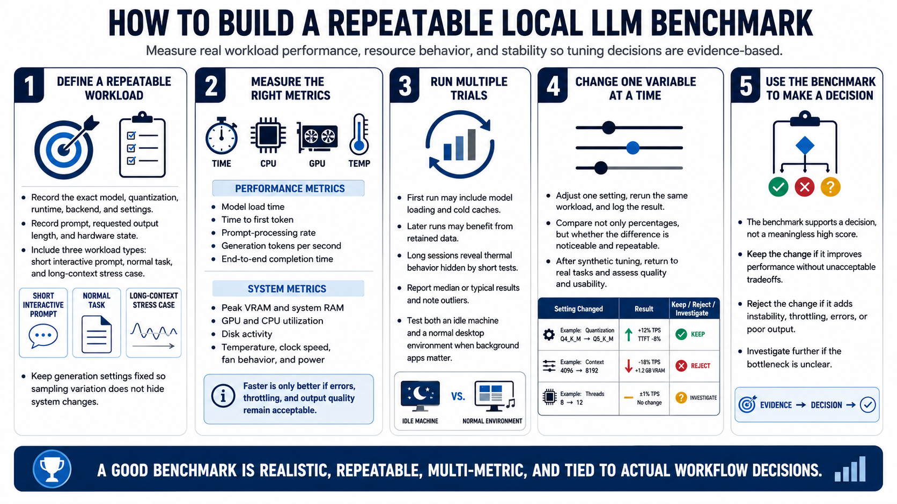

Measuring and Benchmarking
Connecting to LMS... Progress: in progress

Narration
Create a benchmark that represents the intended workload and can be repeated. Record the exact model, quantization, runtime, backend, settings, prompt, requested output length, and hardware state. Include one short interactive prompt, one normal task, and one stress case with longer context if the workflow needs it. Keep generation settings fixed so sampling variation does not obscure system changes.
Measure model load time, time to first token, prompt-processing rate, generation tokens per second, and end-to-end completion. Track peak VRAM, system RAM, GPU and CPU utilization, disk activity, temperature, clock speed, fan behavior, and power where available. A performance improvement that raises errors, throttling, or output defects must be evaluated as a tradeoff.
Run several trials. The first run may include model loading and cold caches, while later runs may benefit from retained data. Long sessions reveal thermal behavior that a ten-second benchmark misses. Report median or typical results and note outliers instead of selecting the best number. Test both an idle machine and the normal desktop environment if background applications are part of actual use.
Change one variable at a time and log the result in a small table. Compare not only percentages but whether the difference is noticeable and repeatable. After synthetic tuning, return to real tasks and assess quality and usability. The purpose of a benchmark is to support a decision: keep the change, reject it, or investigate a bottleneck. It is not a score to maximize without context.